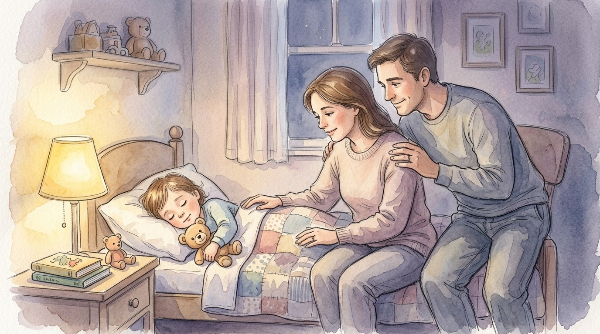
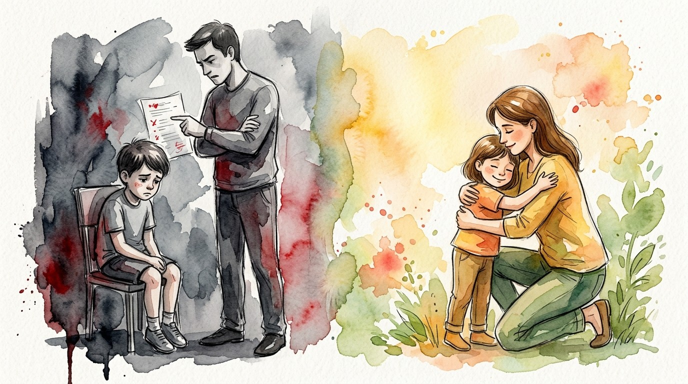

「喜悅」不是因為你做了什麼，
而是因為你是誰。
▼ 向下滑動，認識天父的喜悅 ▼
這一句從天上而來的話，是耶穌公開事奉的起點。 在祂還沒有講過一篇道、行過一件神蹟之前， 天父就先說了：「你是我的愛子，我喜悅你。」 這句話裡藏著三個極深的意義。
耶穌三十年來在拿撒勒做木匠，沒有講過道、沒有行過神蹟， 活在一個平凡、甚至被看不起的生活中。 但天父看祂三十年的隱藏、順服、聖潔， 說：夠了，太好了，我完全滿意。
以弗所書 1:5 說神「按著自己意旨所喜悅的」預定我們。 所以天父是在說：
這是一份使命的託付——我喜悅你，所以我選擇你。
不是因為你做了什麼，是天父看著你這個人， 心裡就覺得溫暖、甜蜜、越看越喜歡。
就像爸媽看著剛睡著的孩子，什麼都沒做， 就忍不住覺得：怎麼這麼可愛。

無條件得到
不需要先證明自己、不需要先做出成績。 禮物是出自送禮者的愛，單單因為他願意給。
努力奮鬥所得
經過一番努力、奮鬥……所得到的代價。 獎品是靠表現換來的，表現不好就沒有。
孩子感受到的是：我的價值，取決於我的表現。 愛變成一種交易，需要不斷用行為去換取。
孩子感受到的是：我本身就是被愛的。 因為被愛，所以願意回應；因為安全，所以願意成長。

天父對耶穌說的「我喜悅你」，正是情境 B 的愛。 耶穌還沒有開始服事，天父就已經喜悅祂。 我們的身份也是如此——先是被愛的兒女，然後才是服事的工人。
願你今天活在這個真理裡：
你不是靠表現換取愛，你是先被愛，才去回應。